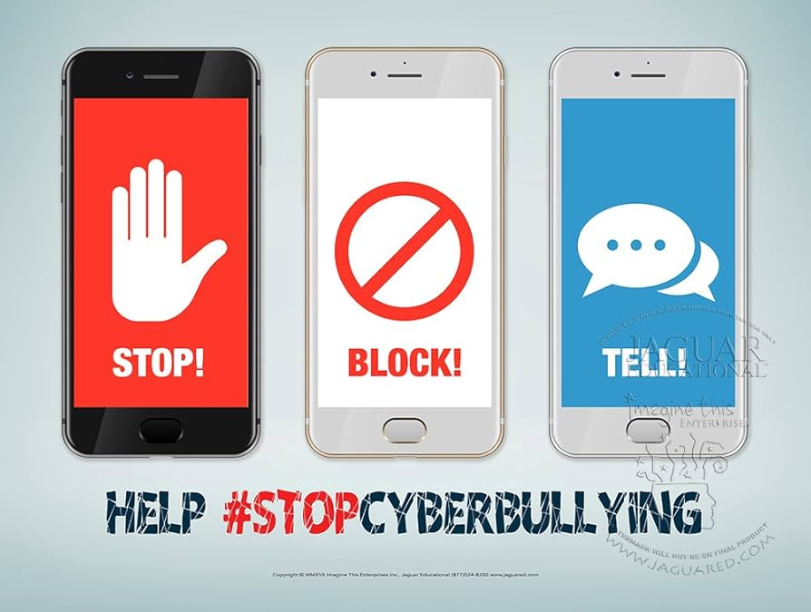

Կիբեռբուլինգ (Թվային հալածանք)
Կիբեռբուլինգը բուլինգի տեսակ է, որն իրականացվում է թվային տեխնոլոգիաների միջոցով։ Այն կարող է տեղի ունենալ սոցիալական ցանցերում, խաղային հարթակներում և հեռախոսների միջոցով։
Ինչո՞վ է այն տարբերվում սովորական բուլինգից
- Անանունություն. Հալածողը կարող է թաքնվել կեղծ հաշիվների հետևում:
- Մշտական ներկայություն. Այն չի սահմանափակվում դպրոցով. զոհը կարող է հալածվել օրը 24 ժամ:
- Արագ տարածում. Վիրավորական նյութերը վայրկյանների ընթացքում հասնում են մեծ լսարանի:
Կիբեռբուլինգի հիմնական ձևերը
Ֆլեյմինգ
Առցանց վիճաբանություն և վիրավորանքներ:
Առցանց վիճաբանություն և վիրավորանքներ:
Հարասմենթ
Պարբերաբար սպառնալից նամակների ուղարկում:
Պարբերաբար սպառնալից նամակների ուղարկում:
Դիքսինգ
Անձնական տվյալների հրապարակում առանց թույլտվության:
Անձնական տվյալների հրապարակում առանց թույլտվության:
Ֆեյք էջեր
Ուրիշի անունից կեղծ հաշիվների ստեղծում:
Ուրիշի անունից կեղծ հաշիվների ստեղծում:

Ինչպե՞ս վարվել (Stop, Block, Tell)
Եթե դարձել ես կիբեռբուլինգի թիրախ.
- Մի՛ պատասխանիր. Քո արձագանքը միայն ոգևորում է հալածողին:
- Արգելափակիր. Օգտագործիր "Block" և "Report" կոճակները:
- Պահպանիր ապացույցները. Արիր էկրանի լուսանկարներ (screenshots):
- Պատմիր մեծահասակներին. Դիմիր ծնողներիդ կամ ուսուցիչներիդ: